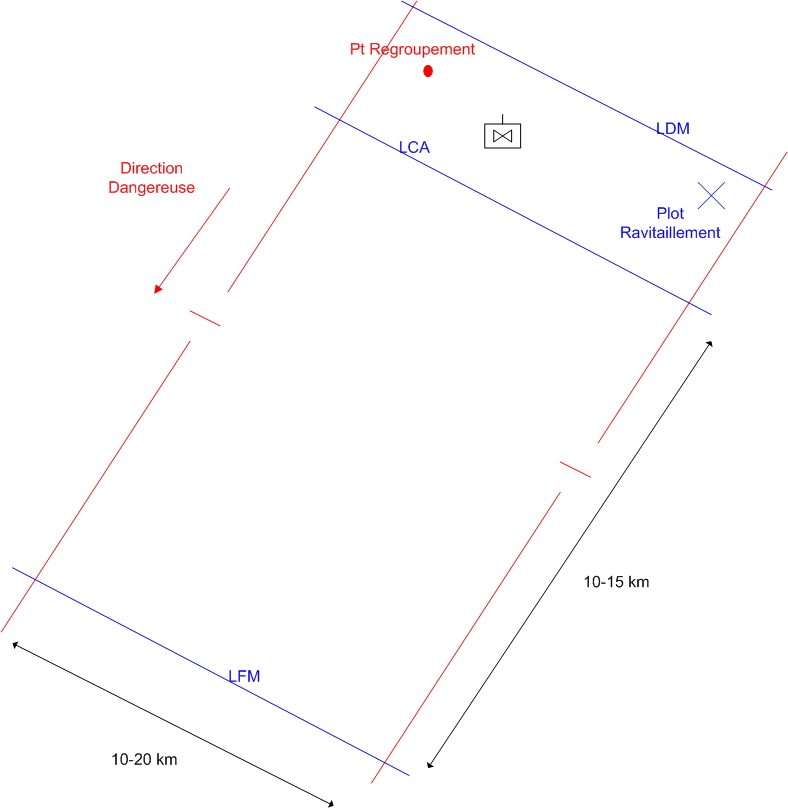

NIVEAU :Automate
ARME :ALAT
MISSION :Attaquer
Objectif principal
- Détruire
Modalités d'exécution
-
Cette mission doit être précédée d'une reconnaissance. Elle débute sur un ennemi généralement reconnu dans le fuseau de l'automate ;
-
Adaptation du dispositif afin de réaliser une attaquer dans le fuseau du sous groupement ;
-
Prise à partie des ennemis en favorisant les unités de type 'Cibles Prioritaires" ;
-
Gestion de la logistique interne du sous groupement : création de plots de ravitaillement et IMEX ;
-
Fin de mission sur ordre de conduite "Interrompre" ;
Schéma de modélisation

Paramètres obligatoires
Fuseau : Limite gauche / Limite droite : Zone de responsabilité.
Direction Dangereuse : Orientation privilégiée des capteurs lors de bond ou de reconnaissance de points.
Point de regroupement : Le point à rejoindre en fin de mission.
Portee Action : Permet, en association de l'Ambiance Mission de déterminer les quantités de carburant embarquer à chaque ravitaillement.
Ambiance Mission : Permet, en association de la Portée Action de déterminer les quantités munition à embarquer à chaque ravitaillement (aa = air/air, as = air/sol).
Paramètres optionnels
Lignes de Début et Fin de mission [LDM/LFM] : permettent d'orienter le fuseau.
Lignes de Changement d'attitude [LCA] : Passage en vol tactique
Lignes de Coordination [LC] : la patrouille se poste en attente de l'ODC Poursuivre.
Plots ravitaillement : Les plots passés en paramètre pouront être utilisés dans le cadre de la mission. Cette liste est automatiquement mise à jour avec les plots créés dans le fuseau de la mission. Si l'ANIBAS n'a pas précisé les limites droite et gauche de la mission, la patrouille s'autorisera à utiliser tous les plots de ravitaillement connus.
Ravitaillement en Début de Mission : cette option permet d'indiquer si le pion doit aller se ravitailler au début de la mission.
Cibles Prioritaires : Paramètre perméttant de favoriser la prise à partie des unités en fonction de leurs types.